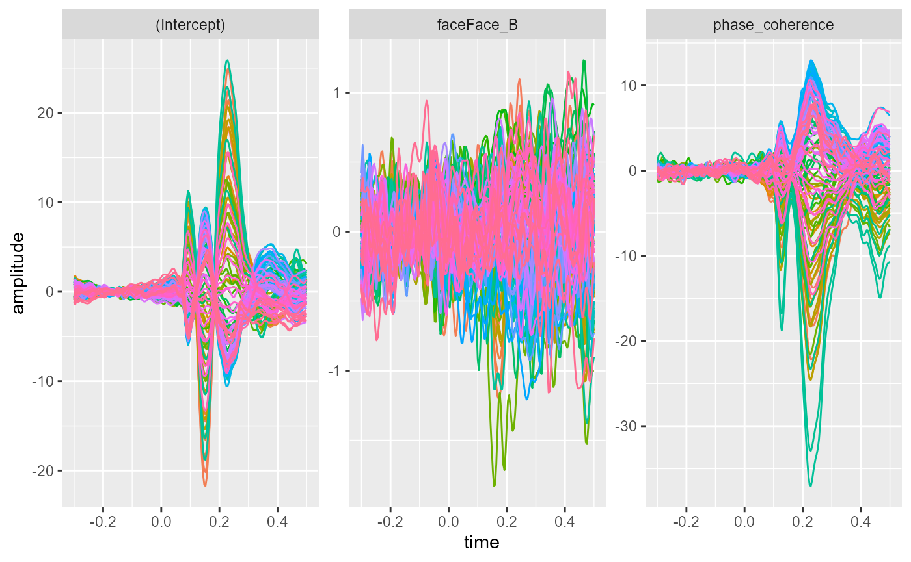
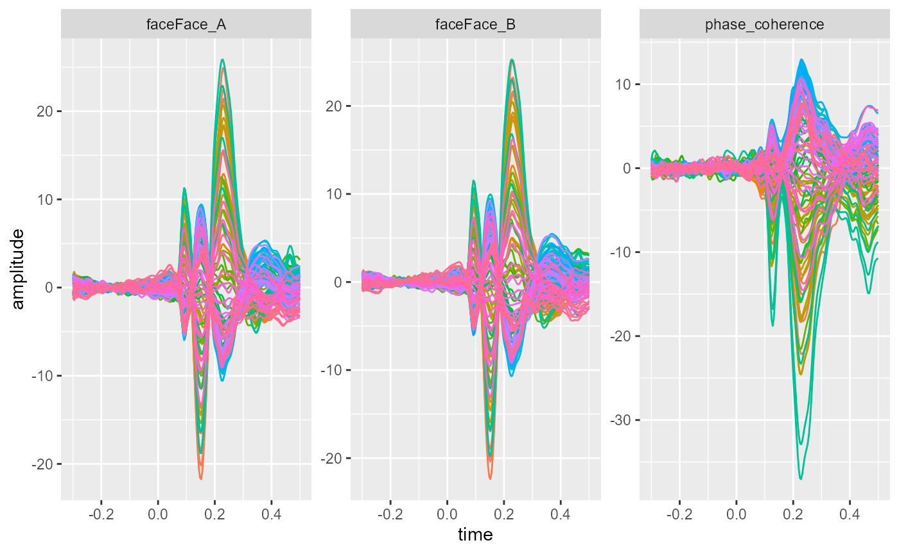
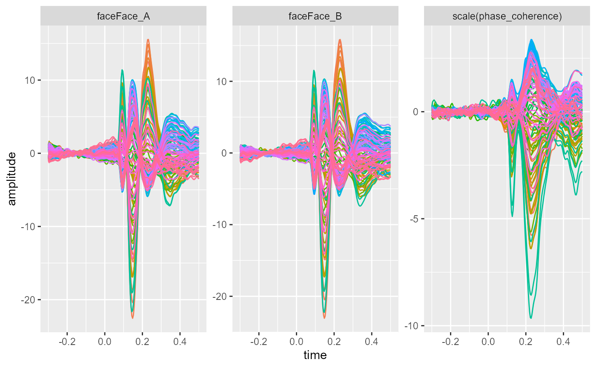
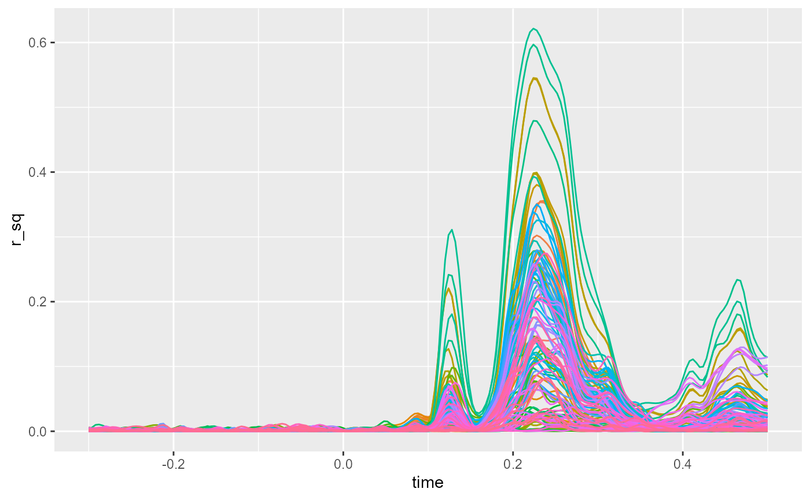

vignettes/linear_modelling/linear_modelling.Rmd
linear_modelling.Rmd
library(eegUtils)
#>
#> Attaching package: 'eegUtils'
#> The following object is masked from 'package:stats':
#>
#> filter
library(R.matlab)
#> R.matlab v3.6.2 (2018-09-26) successfully loaded. See ?R.matlab for help.
#>
#> Attaching package: 'R.matlab'
#> The following objects are masked from 'package:base':
#>
#> getOption, isOpen
library(ggplot2)
library(tidyr)Here we show how to fit a linear model to a single subject’s data. We’ll use the data from the LIMO EEG datase [^1] - S1
This data is from a two-alternative forced choice experiment in which participants had to discriminate between two different faces. Across the course of the experiment, the faces were also varied in their phase coherence from 0% to 85%. The more phase coherent the face images, the easier they were to discriminate from each other.
limo_test <- import_set("limo_dataset_S1.set")
#> loading from .fdt
#> Rounding non-integer event sample latencies...
limo_cont <- R.matlab::readMat("continuous_variable.mat")
limo_cat <- readr::read_csv("categorical_variable.txt",
col_names = c("cond_lab"))
#>
#> -- Column specification --------------------------------------------------------
#> cols(
#> cond_lab = col_double()
#> )The fit_glm() linear model fitting function in eegUtils looks in the epochs field of the data structures as predictors. To use these for linear modelling here, we’ll add the categorical and continuous predictors to the epochs structure.
epochs(limo_test) <- dplyr::mutate(epochs(limo_test),
phase_coherence = unlist(limo_cont),
face = factor(limo_cat$cond_lab,
levels = c(1, 2),
labels = c("Face_A",
"Face_B")))
epochs(limo_test)
#> # A tibble: 1,055 x 5
#> epoch participant_id recording phase_coherence face
#> <int> <chr> <chr> <dbl> <fct>
#> 1 1 limo_dataset_S1 limo_dataset_S1 0.6 Face_B
#> 2 2 limo_dataset_S1 limo_dataset_S1 0.55 Face_A
#> 3 3 limo_dataset_S1 limo_dataset_S1 0.3 Face_B
#> 4 4 limo_dataset_S1 limo_dataset_S1 0.1 Face_A
#> 5 5 limo_dataset_S1 limo_dataset_S1 0.15 Face_A
#> 6 6 limo_dataset_S1 limo_dataset_S1 0.1 Face_B
#> 7 7 limo_dataset_S1 limo_dataset_S1 0.85 Face_A
#> 8 8 limo_dataset_S1 limo_dataset_S1 0.8 Face_B
#> 9 9 limo_dataset_S1 limo_dataset_S1 0.25 Face_A
#> 10 10 limo_dataset_S1 limo_dataset_S1 0.65 Face_B
#> # ... with 1,045 more rowsThe first argument to fit_glm() is a standard R formula, using Wilkinson notation. Unusually, the left hand side of the ~ is omitted, since we’ll be fitting the model to every electrode at every timepoint. On the right hand side, we put our predictors. In this case, we have two: face, a categorical predictor; and phase_coherence, a continuous predictor. The appropriate formula is thus ~face + phase_coherence.
R’s default contrasts are treatment or dummy contrasts, so we expect the model to return three coefficients: an intercept, which will be the amplitude when the categorical predictor is at its first level (i.e. Face A) and when phase coherence is 0; a face term, which will be the difference in amplitude from the intercept when the level of Face is Face B; and a phase_coherence term, which will be the increase in amplitude when image phase coherence increases from 0 to 1.
We can convert the fitted model into a standard data.frame using the as.data.frame function. By default, this returns the coefficients for each time point for each electrode. The values argument can be used to request other statistics by passing “coefficients”, “std_err”, “t_stats”, or “r_sq”.
fitted_model <- fit_glm(~ face + phase_coherence,
data = limo_test)
as.data.frame(fitted_model,
long = TRUE) %>%
ggplot(aes(x = time,
y = amplitude,
colour = electrode)) +
geom_line() +
facet_wrap(~coefficient,
scales = "free") +
theme(legend.position = "none")
An alternative paramterization would be to remove the intercept term. The function would then return separate coefficients representing Face A and Face B. This would be particularly helpful if you are planning to take these coefficients forwards to a second-level analysis.
fitted_model_no_int <- fit_glm(~0 + face + phase_coherence,
data = limo_test)
as.data.frame(fitted_model_no_int,
long = TRUE) %>%
ggplot(aes(x = time,
y = amplitude,
colour = electrode)) +
geom_line() +
facet_wrap(~coefficient,
scales = "free") +
theme(legend.position = "none")
Continuous predictors can be rescaled using the scale() function, which converts them to z-scores (i.e. standard deviation units).
fitted_model_zscore <- fit_glm(~0 + face + scale(phase_coherence),
data = limo_test)
as.data.frame(fitted_model_zscore,
long = TRUE) %>%
ggplot(aes(x = time,
y = amplitude,
colour = electrode)) +
geom_line() +
facet_wrap(~coefficient,
scales = "free") +
theme(legend.position = "none")
The function also provide additional information. For example, we can get the \(r^2\) value representing model fit:
fitted_model$r_sq %>%
pivot_longer(cols = channel_names(limo_test),
names_to = "electrode",
values_to = "r_sq") %>%
ggplot(aes(x = time,
y = r_sq,
colour = electrode)) +
geom_line() +
theme(legend.position = "none")
[^1] Guillaume, Rousselet. (2016). LIMO EEG Dataset, [dataset]. University of Edinburgh, Centre for Clinical Brain Sciences. https://doi.org/10.7488/ds/1556.